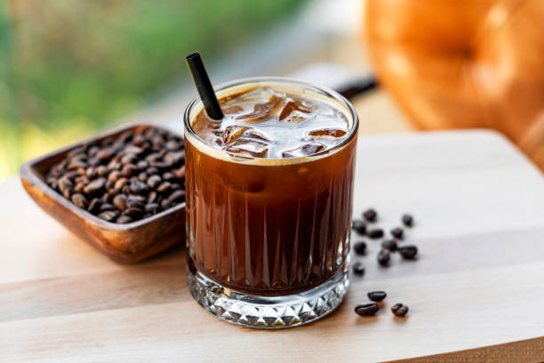

Cold Brew Coffee

Description
Cold brew coffee is by no means created by the McCarty family, but this
recipe is used almost daily by us. Cold brew has a higher caffiene content
due to the nature of the longer brewing duration.
Naturally, the McCarty family adopted this brewing process into our lives.
Ingredients
- Bag of coffee
- Water
- Sealable container
- Cooler/Refrigerator
- Cheese cloth
Steps
- Measure two cups of coffee into your sealable container
- Stir in ten cups of filtered water
- Mix the coffee and water thoroughly
- Seal container and place in cooler/refrigerator
- Let sit for 12-24 hours
- Once brewed strain coffee through cheese cloth into new container
- Enjoy!
Back